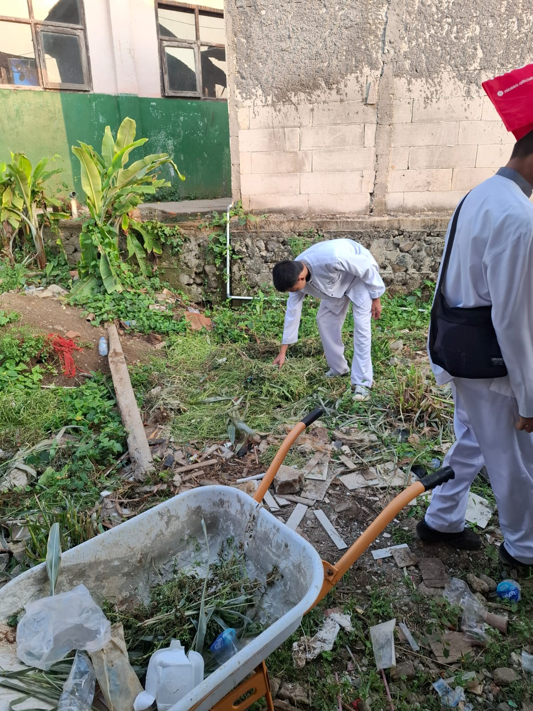
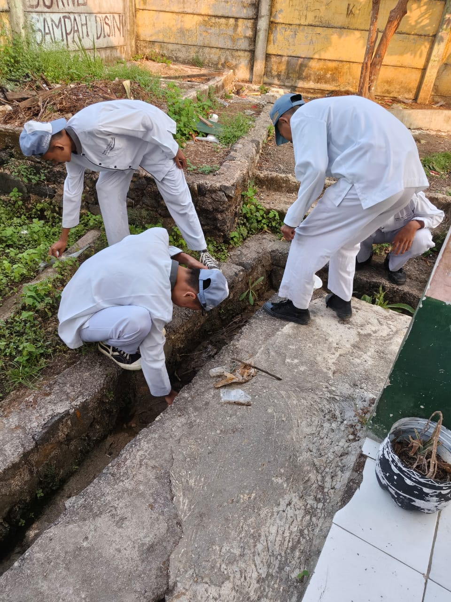
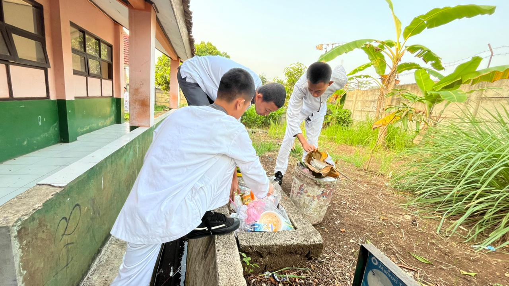
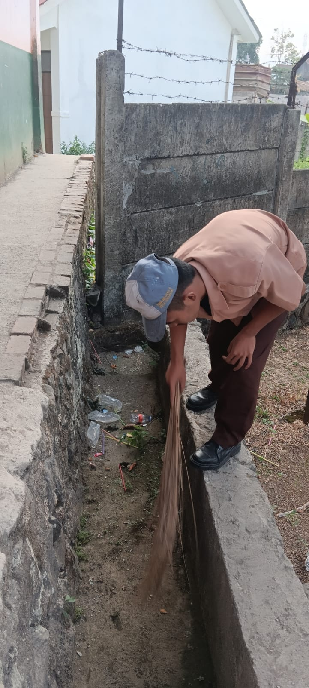
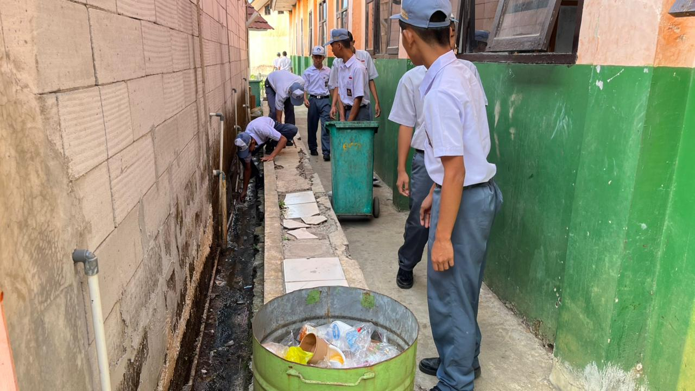
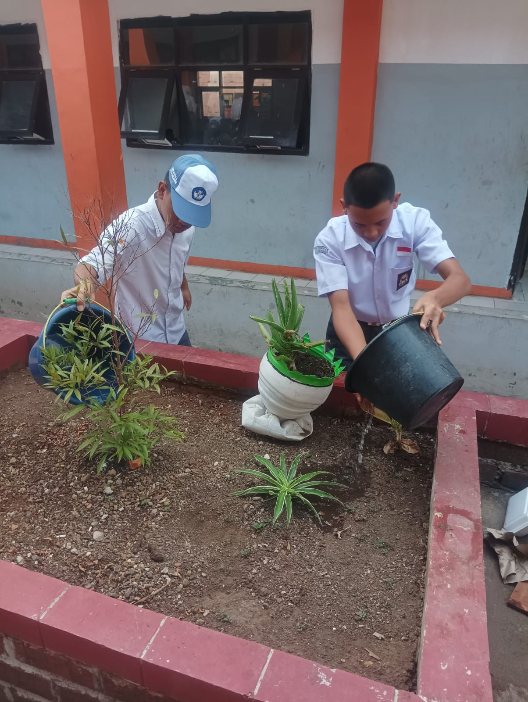

Kumpulan Foto Dokumentasi Kegiatan & Dampak Positif Lingkungan Sekolah
Potret semangat warga sekolah dalam menjaga keberlanjutan lingkungan hidup.

Aksi PirolisisPraktikum pengolahan limbah plastik kemasan menjadi bahan bakar cair cair cair bersama siswa jurusan teknik.

PenghijauanKegiatan penghijauan area terbuka hijau sekolah untuk memperbanyak resapan air dan keteduhan lingkungan.

Bank SampahPetugas kader lingkungan melakukan pemilahan rutin botol dan plastik sebelum disalurkan ke bank sampah.

KompostingPemanfaatan sampah organik dedaunan dari area kebun menjadi pupuk kompos alami untuk tanaman sekolah.

HidroponikHasil budidaya tanaman hijau ramah lingkungan memanfaatkan ruang vertikal dan efisiensi pemakaian air.

EdukasiEdukasi berkala bagi siswa baru tentang pentingnya mengurangi penggunaan plastik sekali pakai di kantin.